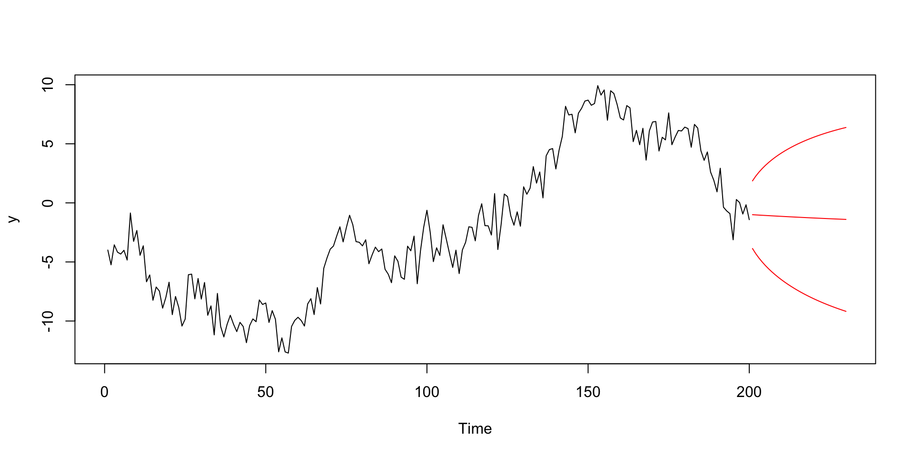
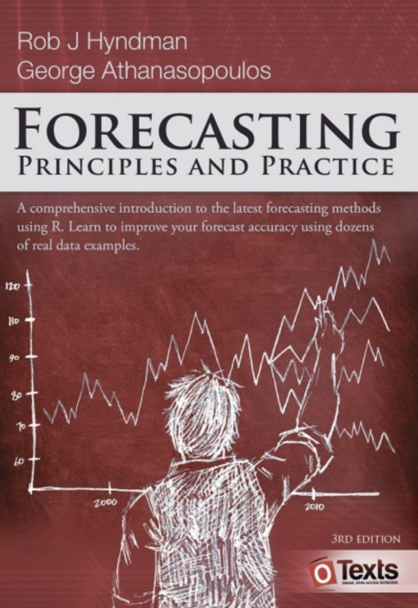
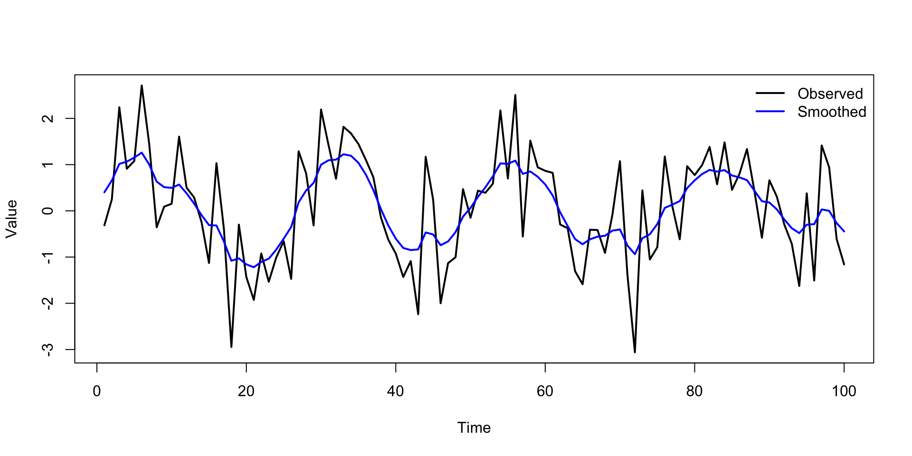

Don’t worry about the details, but there are theorems that say the ARMA model is flexible enough to capture any stable, linear time series dependence if \(p\) and \(q\) are sufficiently large.
Not far from the true values we provided. It’s tougher mathematically than iid regression, but we have asymptotic statistical theory for ARMA models (even when they’re not stable!).
Predict
This is a function in base:
H <-30fc <-predict(my_arma_fit, n.ahead = H)head(fc$pred) # point prediction
Time Series:
Start = 201
End = 206
Frequency = 1
[1] -1.000734 -1.017113 -1.033281 -1.049241 -1.064996 -1.080549
head(fc$se) # predictive standard error
Time Series:
Start = 201
End = 206
Frequency = 1
[1] 1.459916 1.670697 1.853169 2.015144 2.161334 2.294846
Fan chart by-hand
plot(y, xlim =c(0, T + H))lines(fc$pred, col ="red")lines(fc$pred +1.96* fc$se, col ="red")lines(fc$pred -1.96* fc$se, col ="red")

The hyndmanverse

Textbook is free online;
Very popular is some quarters;
Accompanying software is inspired by the tidyverse and very well-documented:
library(tsibble)library(fable)
Only includes data uncertainty (no bootstrap!)
my_data =tsibble(period =1:T, y = y, index = period) my_data |>model(my_model =ARIMA(y ~1+pdq(1, 0, 1))) |>forecast(h =30) |>autoplot(my_data)
Special cases: ARMA models, TVP regression, local-level model, etc;
The dynamics are governed by system matrices\(\BF\), \(\BV\), \(\BG\), and \(\BW\) which often depend on a lower-dimensional set of parameters \(\Btheta\) that must be estimated.
# how do the parameters (log-variances) determine the model (local-level)my_model <-function(x) return(dlmModPoly(order =1, dV =exp(x[1]), dW =exp(x[2])))# just passes to the optim functionestimate <-dlmMLE(y = y, parm =c(1, 1), build = my_model)exp(estimate$par)
[1] 0.7460911 0.2590706
Empirical Bayes estimate of the trend
This is \(E[s_{1:T}\mid y_{1:T}\com\hat{\Btheta}]\):

Bayesian inference
Put conditionally conjugate priors on the unknown parameters: